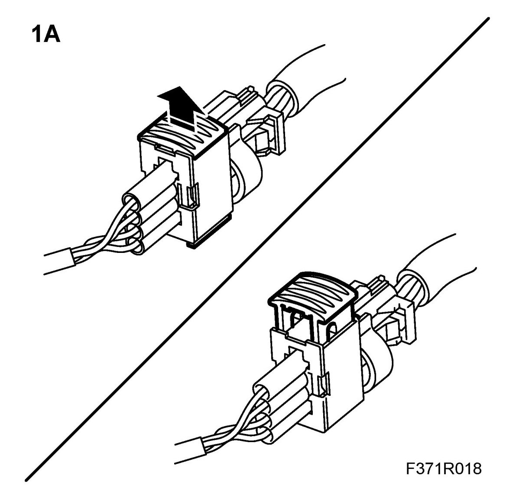
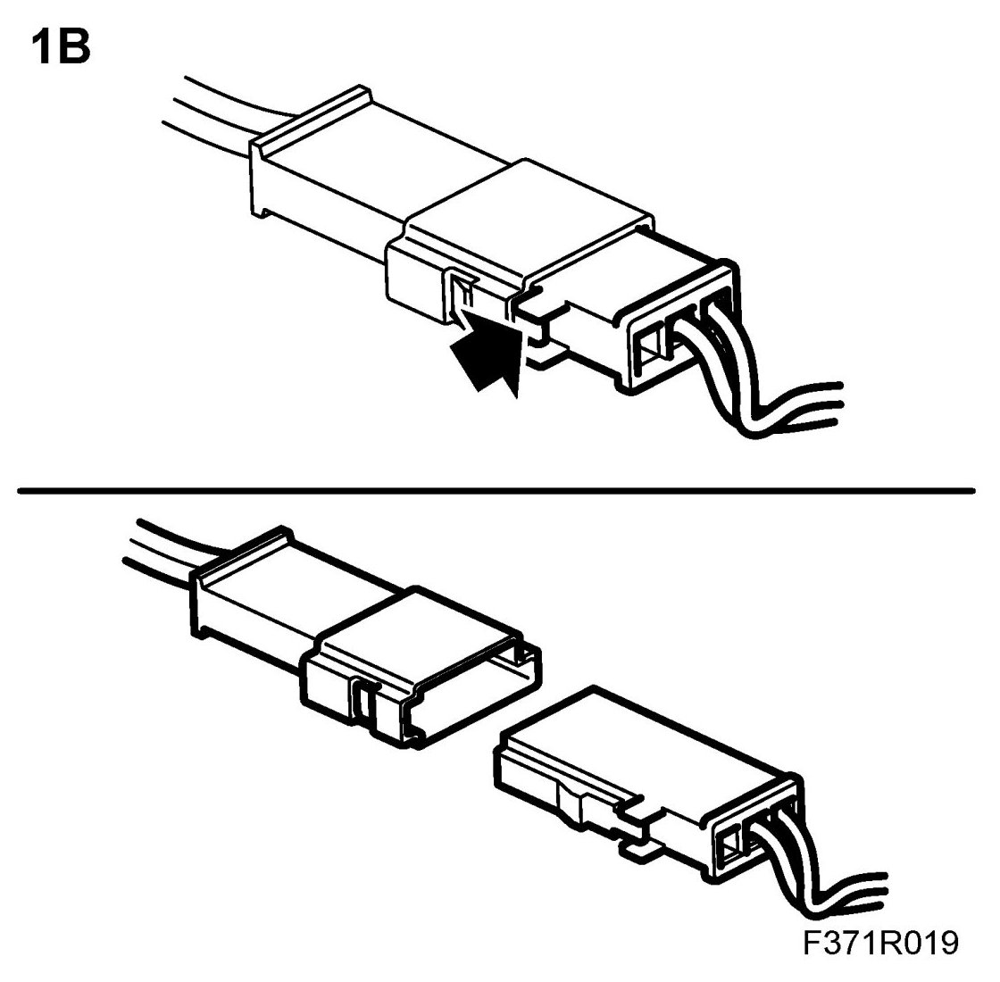
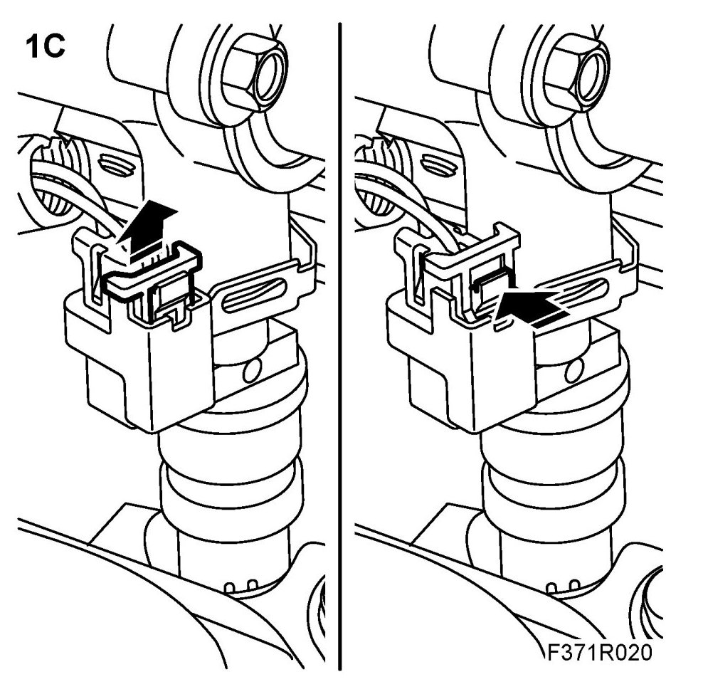
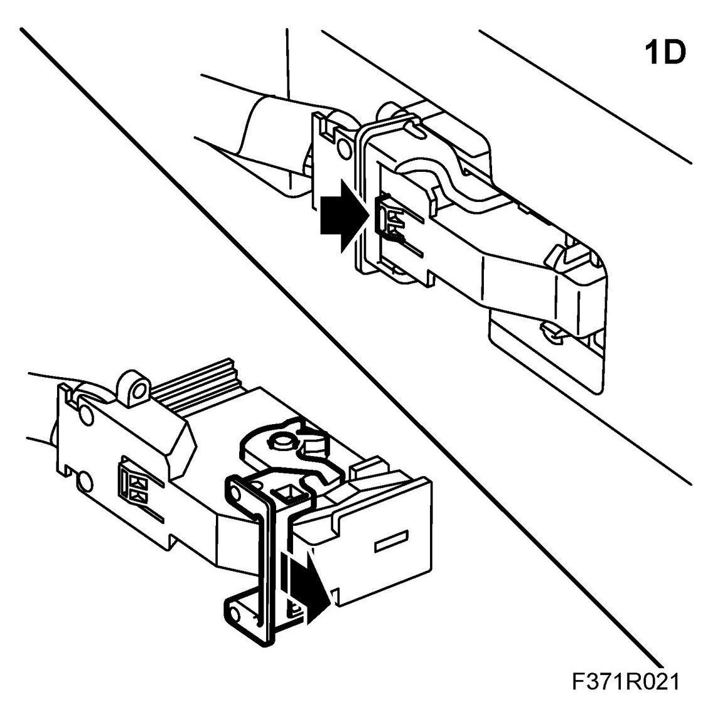
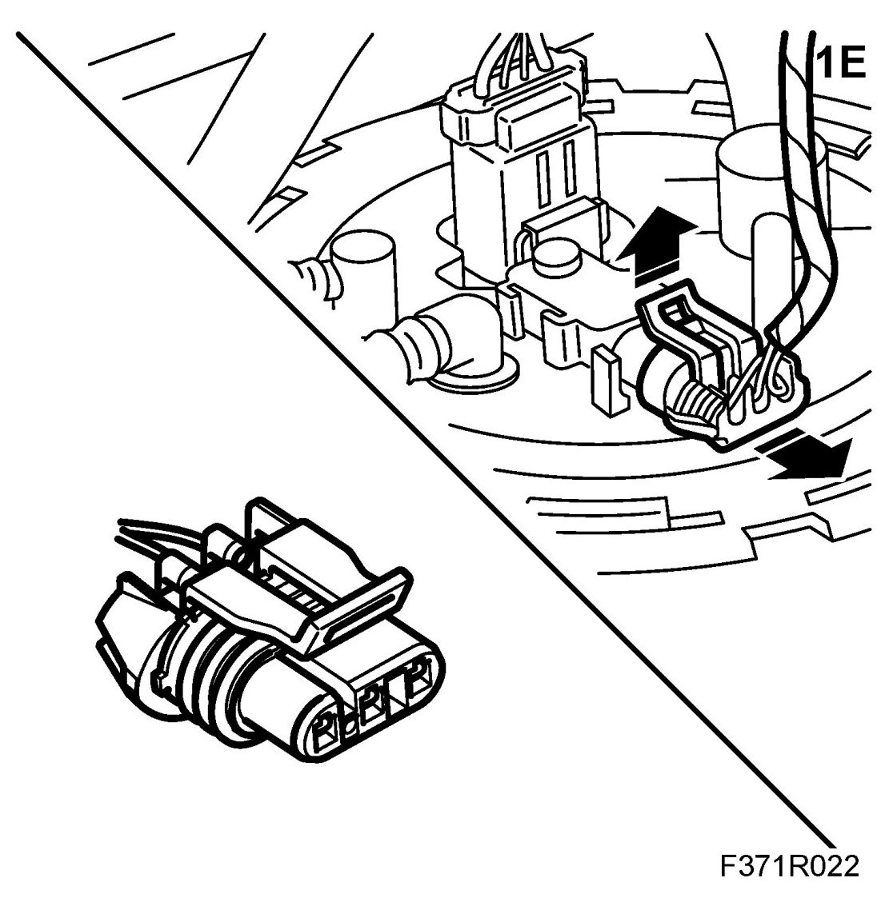
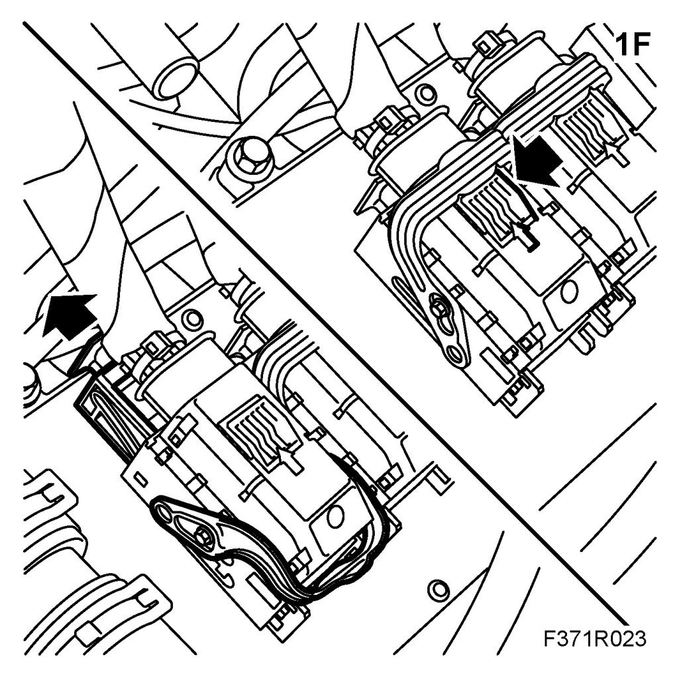
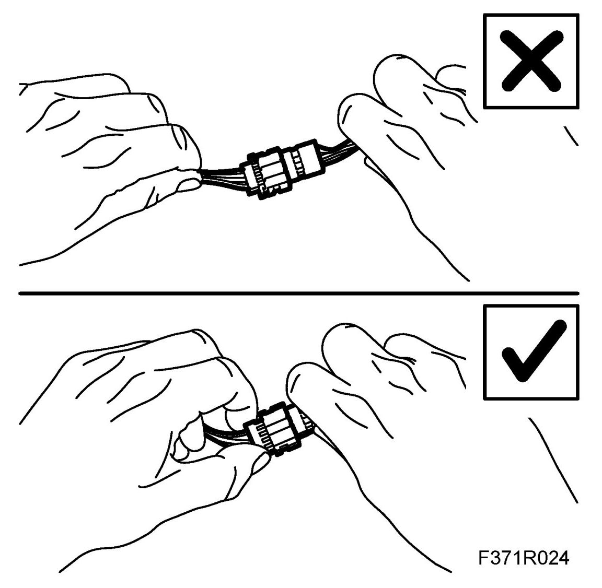
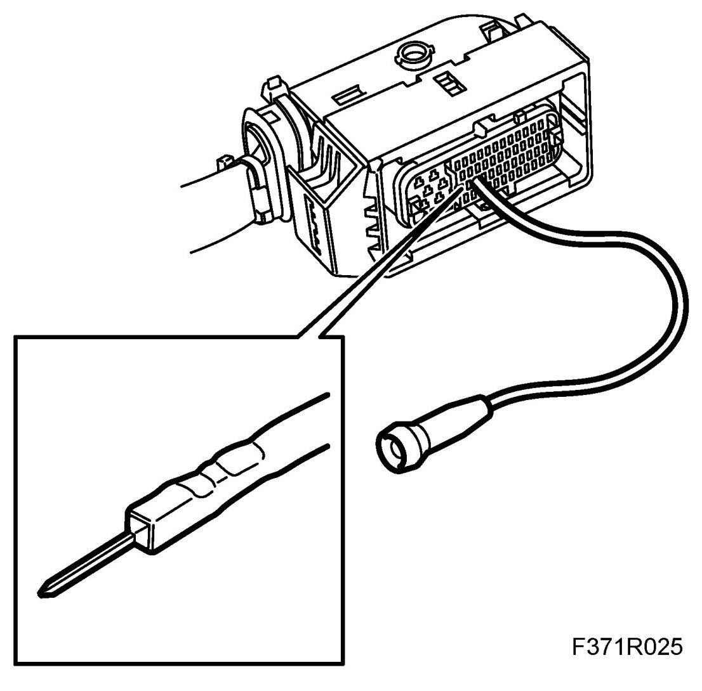
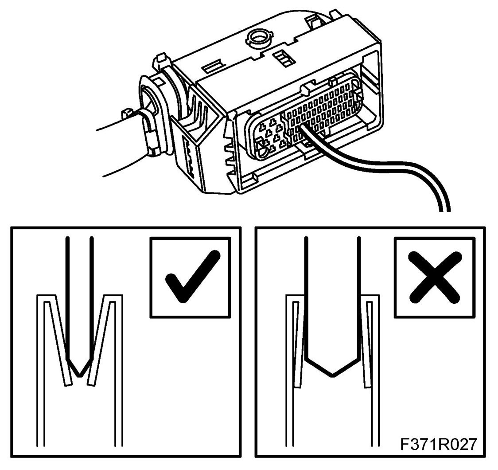
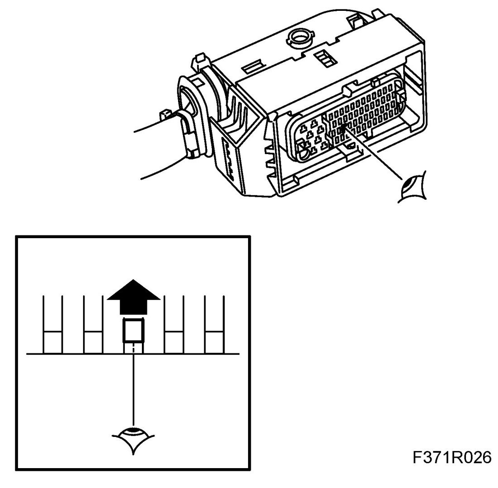

Connector, Handling And Checks
Connector, Handling And Checks
Handling
1. It is important when removing captive connectors to release the lock before removing the connector. Make sure the connector locks properly when connecting.
Before removing a connector you must ensure that no fluid, dirt or the like can enter the connector.
Examples of different types of connectors on some cars:
1.A. Pull out the slide to release the connector's lock.
After connection the connector is locked by pushing in the slide.
NOTE: Use a small screwdriver to make it easier to loosen the lock on the connector.

1.B. Push in the locking tab to release the connector's lock.
Make sure the connector is locked properly when connecting.

1.C. Pull out the slide to release the connector's lock.
After connection the connector is locked by pushing in the slide.

1.D. Push in the clamp's locking catch and fold the clamp forward.
When connecting, fold back the clamp to lock the connector.
NOTE: Make sure that the clamp is locked in the right position to guarantee contact between the connectors.

1.E. Lift up the locking tab to release the connector's lock.
Make sure the connector is locked properly when connecting.

1.F. Press in the connector's locking tab to release the clamp. Release the connector's slide and at the same time fold forward the clamp.
NOTE: The connector can be damaged if greater force than necessary is used to fold the clamp forward without releasing the slide.
When connecting, fold back the clamp to lock the connector.

2. Ground yourself, by taking hold of the car's body/engine, when removing or fitting the connector on the car's control module.
3. Never pull the wiring harness when removing the connector.

4. Never touch the pins on a control module with your hands or clothes.
IMPORTANT:
- Incorrect handing or the use of the wrong tool can damage the sleeves in the connector.
- Use a test cable (part no. 86 12 731) of the correct size to avoid damaging the sleeves in the connector.
5. When performing measurements, only use measurement probes designed for this purpose to avoid damage to the connectors. Use the right size test cable (part. no. 86 12 731).

6. The connector may only be repaired using the specified special tools and spare parts.
7. The following connectors must not be repaired:
- Shielded cables/coaxial cable (e.g. ESP sensor cable)
- Airbag system and pyrotechnic seat belt tensioner system
- High voltage cable (e.g. ignition system, xenon lamp).
Check
NOTE: Before fitting a connector you must ensure that no fluid, dirt or the like can enter the connector.
1. Check that there are no contact problems on the connection.
2. Check the connectors, splicing sleeves and crimps with regard to oxidation, dislodged pins and the pin's clamping force.
IMPORTANT:
- Incorrect handing or the use of the wrong tool can damage the sleeves in the connector.
- Use a test cable (part no. 86 12 731) of the correct size to avoid damaging the sleeves in the connector.
3. A test cable with the right pin size (from kit 86 12 731) must be used to check the connector's clamping force.
NOTE: A test cable that is too large will damage the connector's sleeves.
- Insert the test cable's pins in the connector's pins to assess the clamping force on the relevant pins. Poor clamping force on the connector's pins can cause connector play.

- Also check that the pins mate at the same height as the other pins in the connector. A too low mating height indicates pushed back pins in the connector, which can cause connector play.

4. Check the cables or connectors to ensure there is no breakage.
5. Check the wiring harness, splicing sleeves and earth connections.